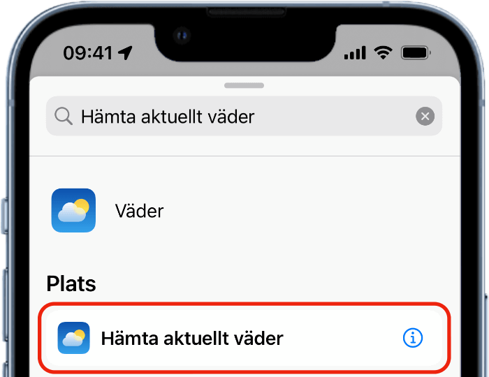
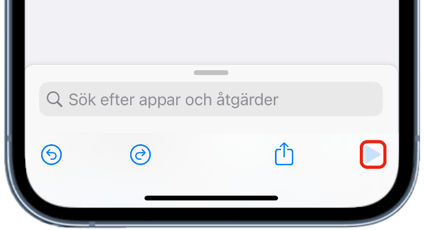

Välkommen
Vad är genvägar?
Genvägar är en inbyggd app i iPhones och flera andra Apple enheter. Det är ett ganska simpelt sorts programmeringsspråk. Det är en app där du själv kan programmera olika kommandon med blockprogramering. Appens block består av både kommandon som integreras med telefonen som kolla vädret, ring ett samtal och även tredjeparts appar, genvägar till exempel se hur mycket surf du har kvar hos Comviq. För att kunna använda blocken finns också mängder av andra funktioner, som programmeringsspråk brukar ha. Du kan använda listor, om, variabler och mängder av sätt att styra text. Genvägar kan effektivera flera vardagsysslor genom att göra din morgonprocedur till ett knapptryck. Du kan antingen programmera dessa helt själv eller ladda ner andras genvägar. Det finns många communityn gjorda för att dela med sig av genvägar, Apple har också egna genvägar i en egen kategori av appen.
Automatiseringar
En annan av de stora funktionerna i Genvägar är automatiseringar. Automatiseringar är att vanliga genvägar startar vid valda tillfällen. Du kan till exempel skicka ett meddelande när du öppnar Instagram. Sätta på en smartlampa när du stänger av ditt alarm. Söka upp dina busstider när din telefon känner av en NFC tagg. Automatiseringar i genvägar integreras också med Homekit, Homekit är Apples plattform för att styra smarthem tillbehör. Om du har en "hemmahub", det vill säga en AppleTV, Homepod eller en iPad som alltid är hemma kan automatiseringarna köra i bakgrunden genom enheterna. Med det kan din lampa till exempel stängas av när du går hemifrån om det är 10 grader ute och du har över 40gb surf kvar på ditt abonnemang. Själv har jag automatiseringar som kollar om någon av mina kontakter antingen har en inskriven födelsedag eller har namnsdag. Om någon har antingen födelsedag, eller namnsdag kan jag klicka på en knapp så skickas ett grattis meddelande till personen.
Hur gör man en egen genväg?
Det är ganska enkelt att skapa en genväg. Jag kommer beskriva hur du skapar en genväg som ger dig vädret. Du behöver börja med att gå in i appen, gå igenom introduktionen appen ger dig. Om du har gått in på ”Mina genvägar” klickar du bara på pluset uppe till höger.
Sedan får du börja välja block, om du har en senare iOS uppdatering kommer du få exempel block, som till exempel kan vara ”Skicka meddelande”. Men för att få veta vädret söker du efter "Hämta aktuellt väder". Klicka på den texten, så läggs blocket in i genvägen.
När du lagt in det blocket, sök efter ”Visa träffar”. Lägg in den på samma sätt, sen klickar du startpilen. Då borde du få en notis med hur många grader det är hos dig och hur vädret är. Sen kan du klicka på symbolen uppe till vänster för att ge din genväg en ny symbol, och sen klicka på den utgråade texten "Genvägsnamn" och välj ett eget namn för genvägen. Därefter kan du klicka på krysset, så är du färdig.
